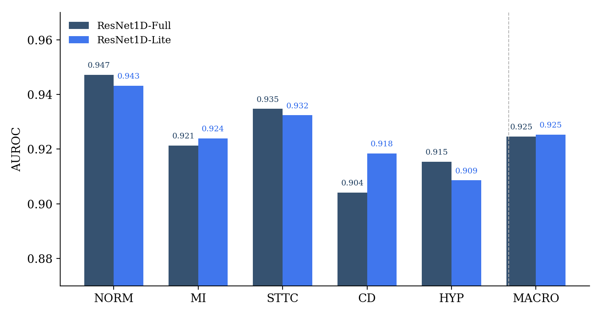
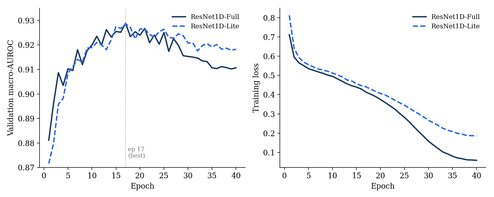

Key finding: ResNet1D-Lite (1.0M parameters, 4 MB) matches and marginally exceeds ResNet1D-Full (8.6M parameters, 34.5 MB) on macro AUROC — 0.9253 vs 0.9246 — at 8.65× fewer parameters, demonstrating competitive ECG classification within a footprint suitable for edge deployment.
Automated 12-lead ECG classification has reached near-cardiologist accuracy on established benchmarks, yet most published models are too large for the low-resource clinical hardware common in sub-Saharan Africa and other resource-constrained settings. We ask whether a substantially smaller architecture can match the discriminative performance of a full-scale model on the PTB-XL diagnostic superclass task. We train two 1D residual networks — ResNet1D-Full (8.6M parameters, 34.5 MB) and ResNet1D-Lite (1.0M parameters, 4.0 MB) — on the same five-class multi-label task (NORM, MI, STTC, CD, HYP) using the standard PTB-XL train/validation/test split. On the held-out test set, ResNet1D-Lite achieves a macro AUROC of 0.9253 versus 0.9246 for ResNet1D-Full, exceeding the larger model at 8.65× fewer parameters. ResNet1D-Lite also generalises better: its post-peak validation AUROC decay (0.0103) is roughly half that of ResNet1D-Full (0.0181), indicating that capacity reduction acts as implicit regularisation. These results demonstrate that a compact 1D ResNet is sufficient for competitive diagnostic superclass classification on PTB-XL, with model size and storage requirements compatible with edge deployment.


@misc{ouma2026ecg,
title = {Compact 1D Residual Networks for Efficient
12-Lead {ECG} Classification:
A {PTB-XL} Benchmarking Study},
author = {Ouma, Craig Carlos},
year = {2026},
month = {June},
note = {Preprint},
url = {https://craigouma.github.io/ptbxl-ecg-paper/}
}